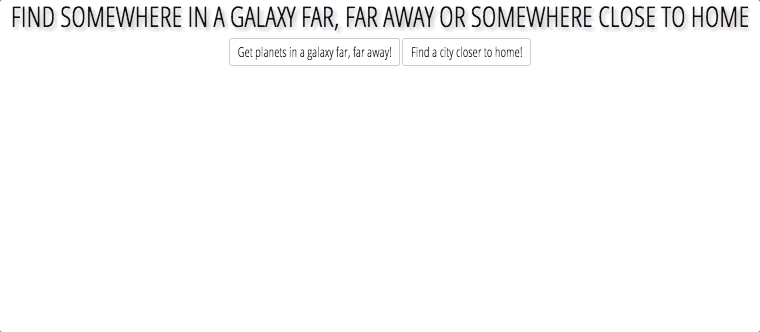

Random Place Generator
A JavaScript App using AJAX to access a Ruby on Rails JSON API


About
Random Place Generator was created for travel inspiration. With a click of a button, someone could find a random city on Earth. I came up with this idea while working on my bucket list app and was brainstorming places I would like to visit.
In action
This app has two buttons. One that when clicked gives a random place on Earth and another that gives a random planet from the Star Wars Universe. The Star Wars information is from SWAPI, the Star Wars API. The city data is from a CSV file downloaded from Simple Maps, which I added to a PostgreSQL database.
For the Star Wars planets, along with the name, I also display climate, terrain, and population. For the cities, I also display the region and country to which the city belongs, and the city's population.
Technologies
Ruby | Ruby on Rails | JavaScript | jQuery | AJAX | CSS | HTML